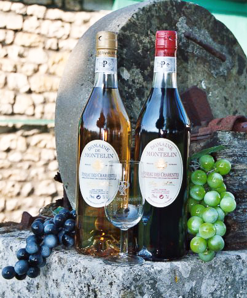

Le Pineau des Charentes
1589, le fruit d'un heureux hasard...
Il est une légende où l’on conte que le Pineau des Charentes est non seulement le fruit de la vigne mais aussi celui du hasard.
En 1589, alors qu’Henri IV accédait au trône de France, un vigneron charentais, au cours des vendanges, versa par mégarde du moût de raisin dans une barrique qui contenait de l’eau-de-vie de Cognac.Il remisa alors ce fût dans le chai du domaine seigneurial. Quelques années plus tard, lors d’une récolte abondante, la précieuse barrique lui devint nécessaire. Il eut la surprise d’y découvrir un merveilleux breuvage, limpide, ensoleillé comme la terre des Charentes.
Le Pineau des charentes est élaboré à partir de cépages définis et réglementés par l'organisme de l'Appellation d'Origine Controlée.
Pineau traditionnel
Le Pineau blanc est un savoureux mélange de Ugni Blanc, Folle Blanche, Colombard, Sémillon, pour ne citer qu'eux tandis que le Pineau rosé s'approprie les cépages Merlot et Cabernet-Sauvignon
Caractéristiques:
- Degré: 17°
- Contenance: 0,75 l
Ils vieillissent en fût de chêne.
Cuvée spéciale
Un pineau blanc de 1996 conservé en barrique. Issu d'une année exceptionnelle, son goût corsé en cognac vous surprendra.
Bonne Dégustation!
Il est recommandé de servir le Pineau des Charentes dans un verre tulipe, pour mettre en valeur sa robe et son bouquet. Servi frais entre 8 et 10°C, vous sentirez toute la générosité d’un terroir d’exception.